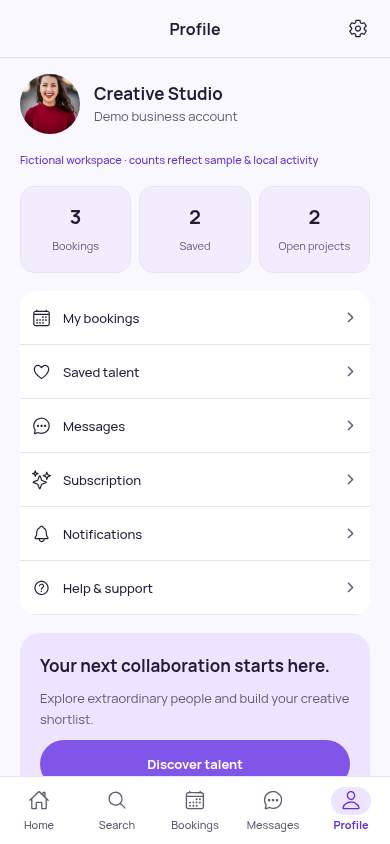
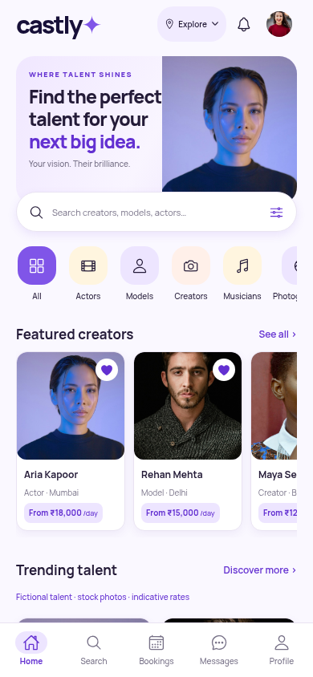
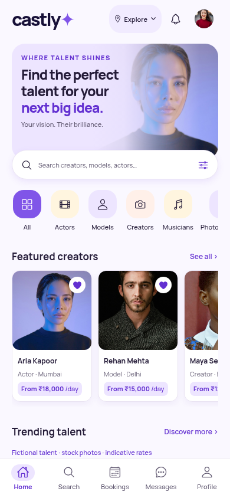
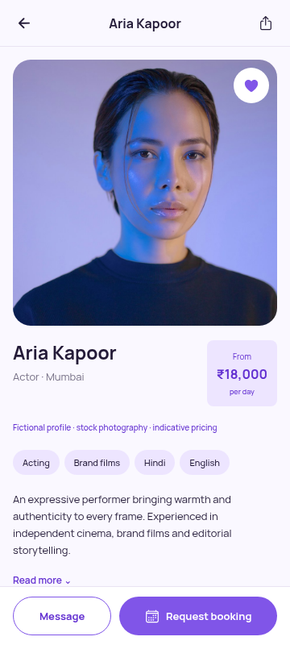
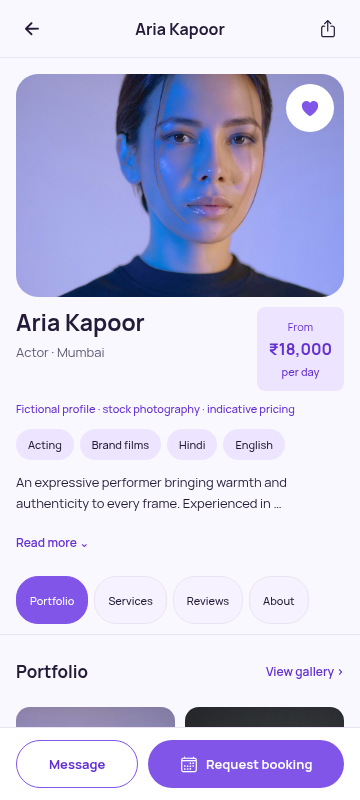
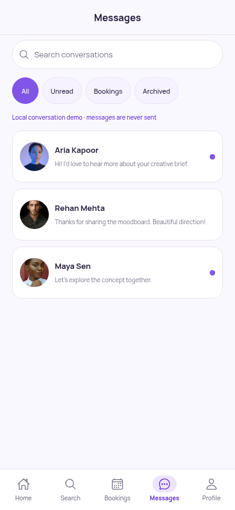
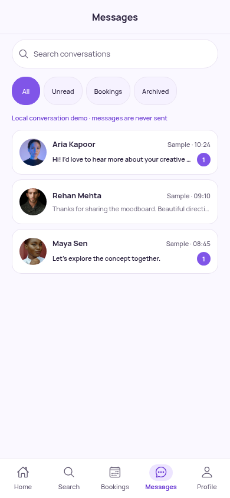
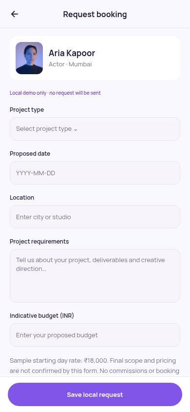
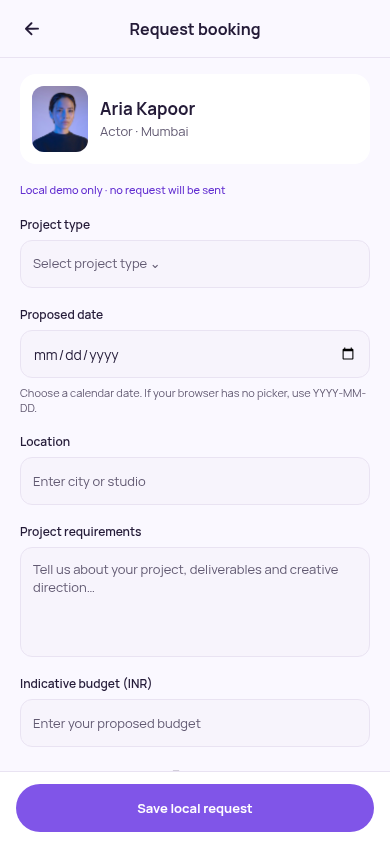

Account Profile — 390×844
Caption contrast improves from 4.05:1 to 5.65:1; captions are 11px.



Before: fac6c6c. After: working changes on feat/initial-castly-mobile. Chromium screenshots are CSS viewports, not native device evidence. Select any image for the original PNG.
Soft lavender overlay replaces the rectangular image edge.


Caption contrast improves from 4.05:1 to 5.65:1; captions are 11px.

Shorter responsive hero; tabs are visible and stick while the content scrolls. Footer is outside the scroller.


76px minimum cards, readable sample timestamps and actual unread-message counts.


Browser date input replaces free-form entry. Native system picker requires device confirmation.


Castly violet sparkle on opaque lavender; native masking remains untested.